A personal rapid prototype: player-authored "did you fool your friends?" trivia loop with generated burn cards — concept, design, and build in days.
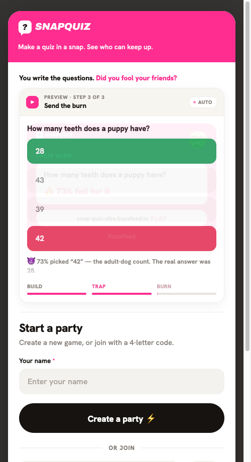
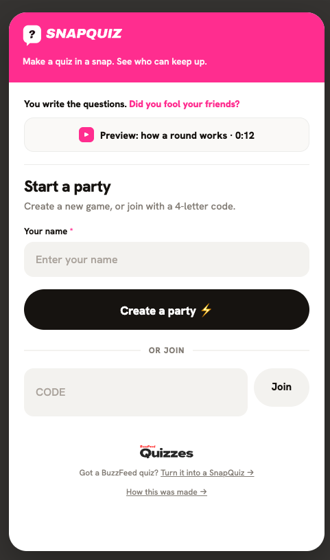
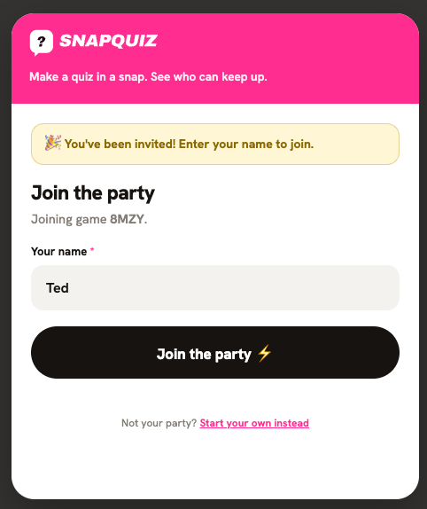
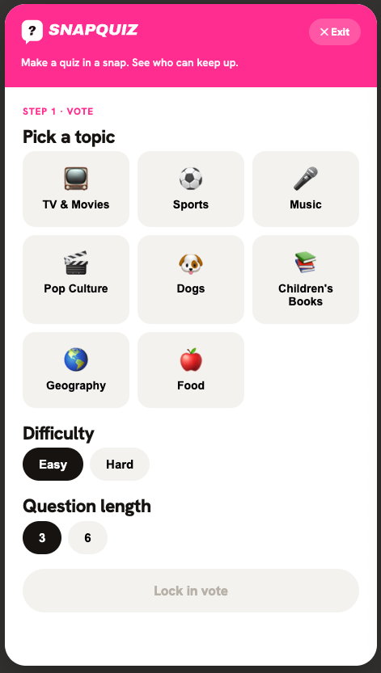
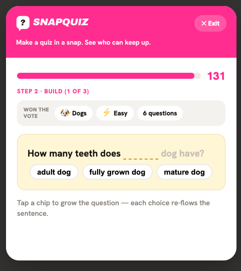
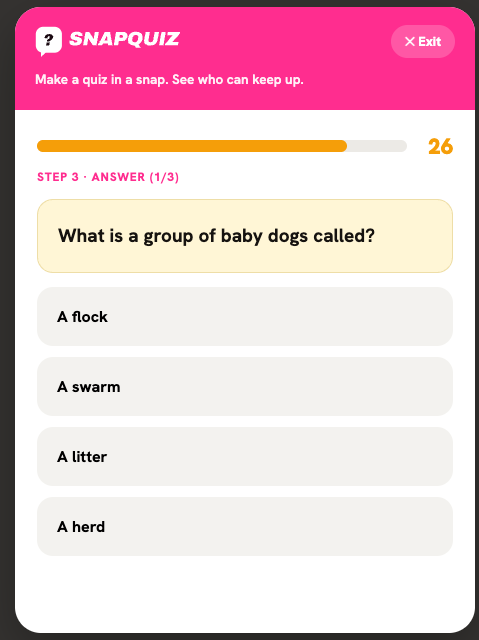
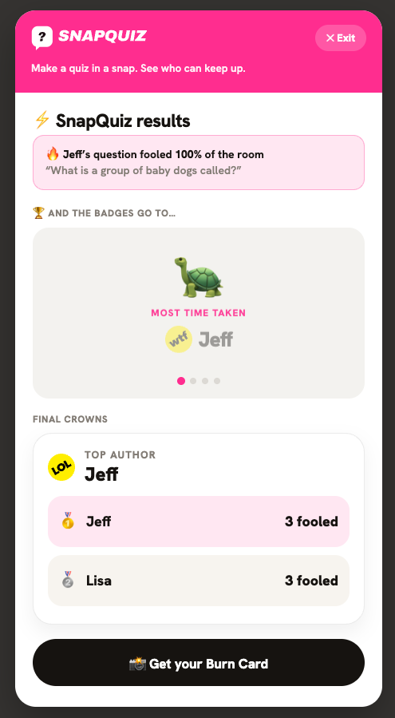
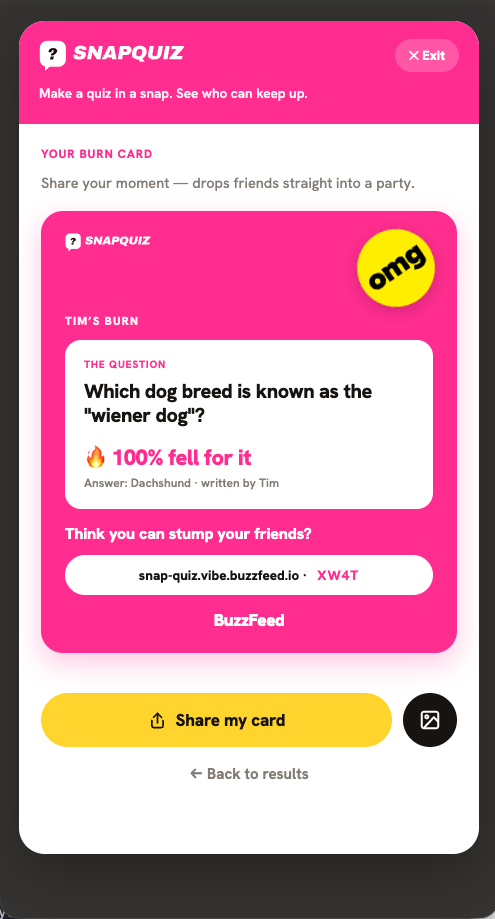
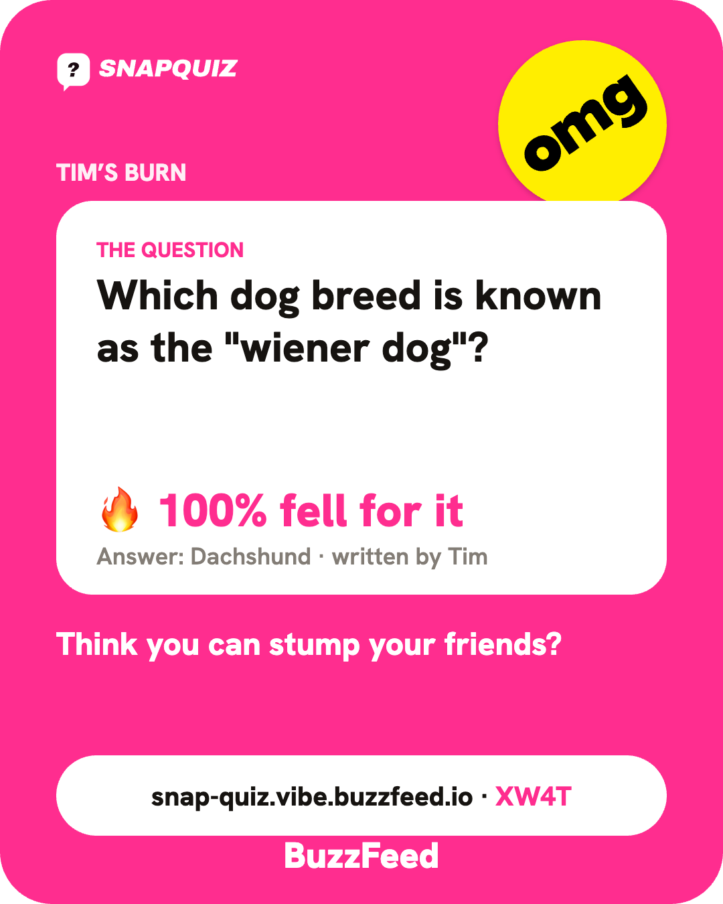
The back-office for turning a published quiz into a playable pack — import a source, qualify it, generate questions, review/refine, and publish, no CLI. Built as a zero-dependency Node sidecar that reuses the real offline pack pipeline (deterministic is-eligible-check.js qualification, no AI, no network).
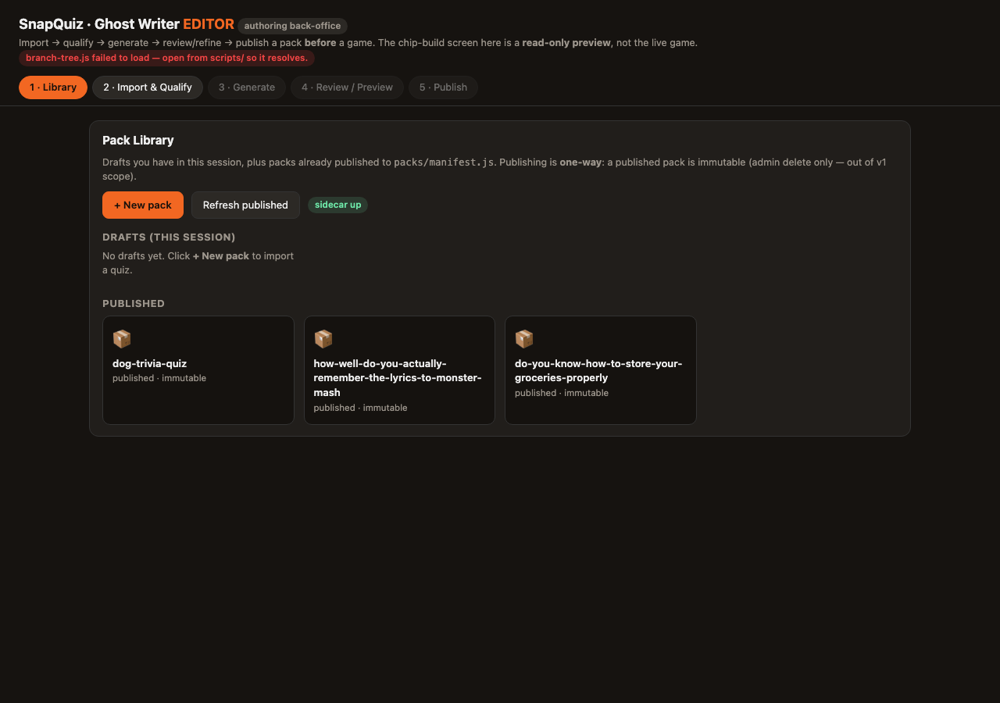
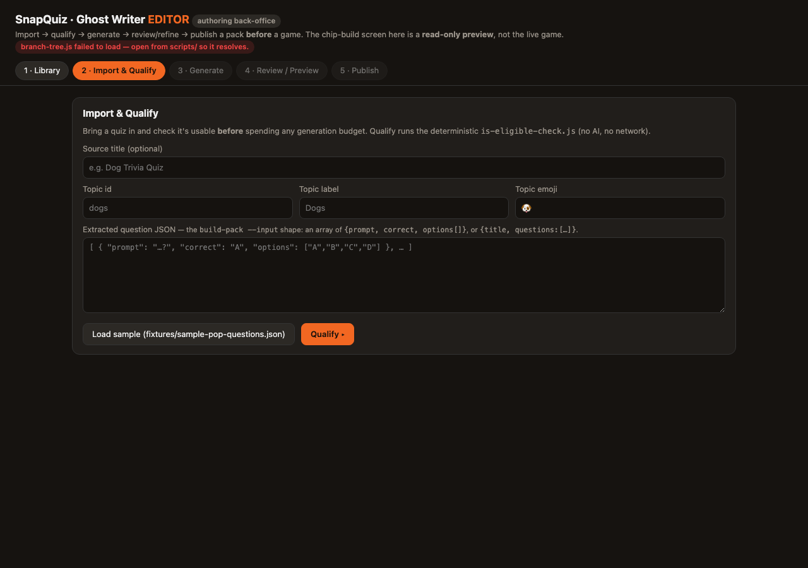
Design direction — a fuller "SnapQuiz Studio" concept for the same tool CONCEPT:
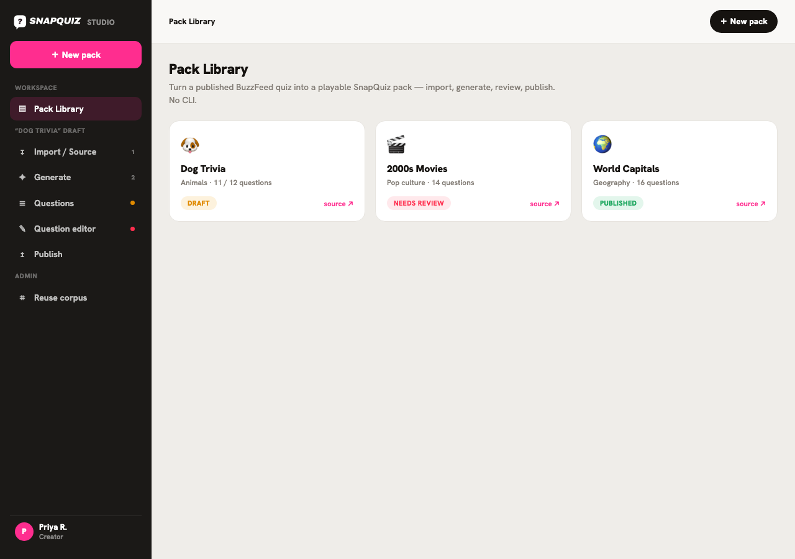
End-to-end walkthrough of the loop — start a party, build, play, score, and share the generated burn card:
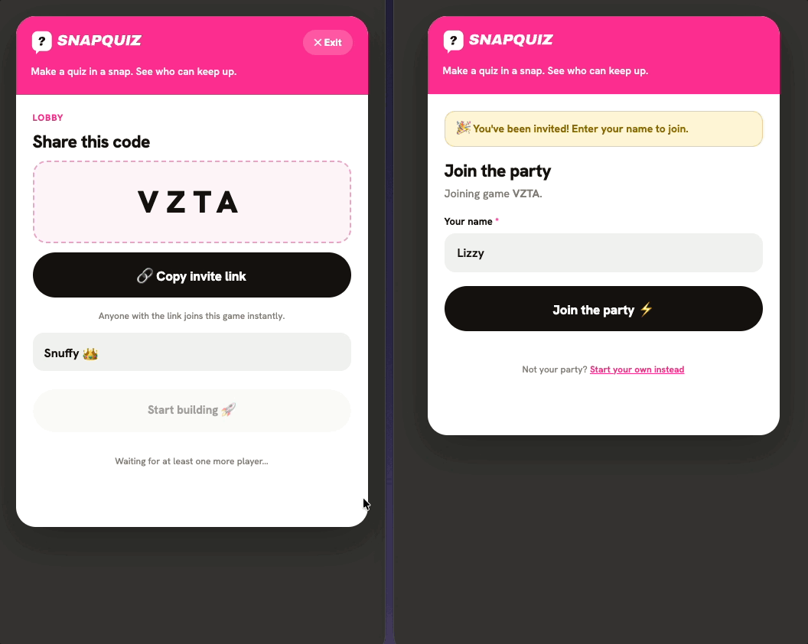
A personal rapid prototype: player-authored "did you fool your friends?" trivia loop with generated burn cards — concept, design, and build in days. Discussed on request.
I built Snap Quiz as a personal rapid prototype: an async party trivia loop where players write the questions and try to fool their friends. Concept, design, and build in days.
Players author trivia, others guess, and the game reveals who got fooled. It generates burn cards to share the result. I vibe-coded it from concept to a playable build.
The prototype went from concept to a playable build in days. It was an exploration of the did-you-fool-your-friends loop and how generated burn cards make a result worth sharing.